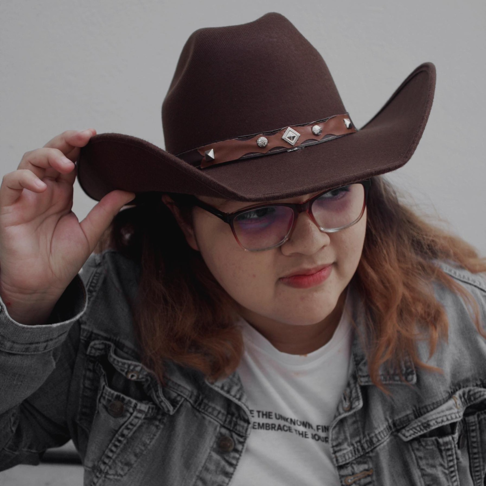

Valeria Flores Villegas
Soy una estudiante de Diseño gráfico en la BUAP, originaria de Matamoros Tamaulipas, vine desde muy lejos para poder estudiar ya que allá las posibilidades son casi nulas. Soy una persona que disfruta totalmente de las cosas artisticas como ilustrar, bailar o cantar.
Actualmente me encuentro cursando los ultimos semestres de la carrera Soy una estudiante de Diseño gráfico que duarnte la carrera ha desarrollado la pasión por la ilustración y la comunicación gráfica que busca desarrollar más su conocimiento incluso fuera del ámbito estudiantil. Como estudiante busco poner en práctica mis conocimientos adquiridos pero sobre todo, desarrollarlos más en el ámbito laboral. Partiendo desde la ilustración digital y sistemas de impresión. Asi como procesos gráficos, diseño industrial y desarrollo tipográfico, haciendo uso de mis valores de diciplina y creatividad